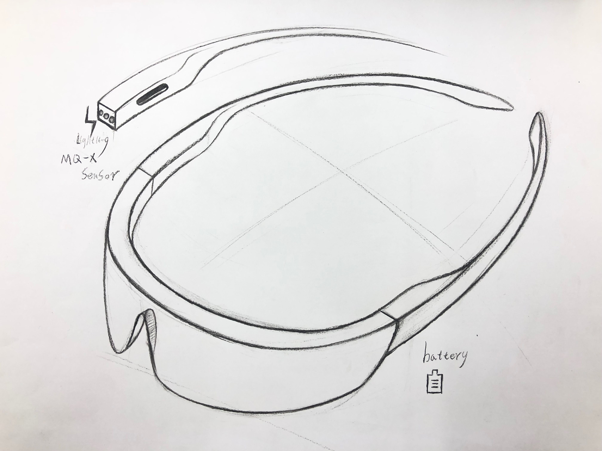

成果
メガネとイチゴジャム
学習進捗
今回は自分が身近に使用している生活に欠かせないメガネをIOTにしようと思った
まず考えたのは視力が変わっても使えるように度数が変わるメガネをできるか考えた
しかしそのメガネは水で調節できるものがもうすでに合ったので違うものに変えました
メガネをできるだけユニークなものに変えていこうと考えたため色々なセンサーと組み合わせで
考えていった。そこからメガネに匂いセンサーを取り付けることで顔周辺の匂いを感知する
匂いセンサー付きメガネは作られていないのではないかと考え、仕様を考えた
使い方としては、今回はアルコールセンサーを匂いセンサーに見立てて考えたが
まず 匂いが一定の数値に達するごとに臭いか臭くないかのサインを変更しています
例えば今回のことでいうとセンサーから送られてくる数字が100未満なら[臭くない]
数値が200未満100以上なら[注意]200以上なら[臭い]とwebページに送られるように
コードを書きました。それぞれ背景の色も変えれるようにしていて水色、黄色、赤色と
信号のようにしました
これをモジュール変更でバリエーションを増やせたらいいなと思った
あとはイメージ画像
